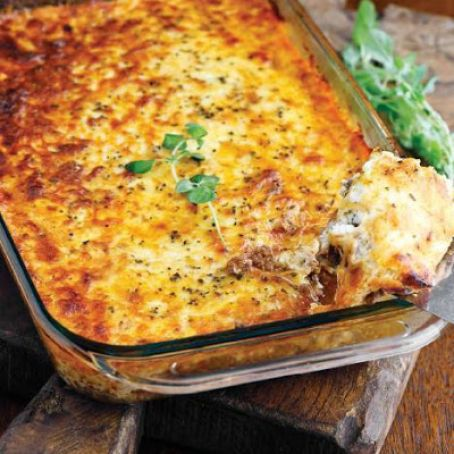

Lasagna

Description
This is a simple recipe for lasagna that includes ground beef, onion
, garlic, crushed tomatoes, tomato paste, fresh basil, and mozzarella
and Parmesan cheese. The lasagna noodles are cooked separately and then
layered with the meat sauce and cheese in a baking dish. The dish is
then baked until the cheese is melted and bubbly.
Ingredients
- 1 pound of lasagna noodles
- 1 pound of ground beef
- 1 small onion, diced
- 1 clove of garlic, minced
- 1 (28-ounce) can of crushed tomatoes
- 1 (6-ounce) can of tomato paste
- 1/4 cup of chopped fresh basil
- 1 teaspoon of sugar
- Salt and pepper, to taste
- 2 cups of shredded mozzarella cheese
- 1/2 cup of grated Parmesan cheese
Steps
- Preheat your oven to 350°F (175°C) and lightly grease a 9x13-inch baking dish.
- Bring a large pot of salted water to a boil and cook the lasagna noodles
according to the package instructions. Drain the noodles and set them aside.
- In a large skillet, cook the ground beef over medium-high heat until it's
browned. Add the onion and garlic and cook for an additional 2-3 minutes,
or until the onion is translucent.
- Stir in the crushed tomatoes, tomato paste, basil, sugar, salt, and pepper.
Bring the sauce to a simmer and let it cook for about 10 minutes, or until
it has thickened slightly.
- To assemble the lasagna, spread a thin layer of the meat sauce in the bottom
of the prepared baking dish. Top with a layer of the cooked lasagna noodles,
followed by another layer of sauce and a sprinkle of mozzarella and Parmesan
cheese. Repeat the layers until all of the ingredients are used up, ending
with a layer of cheese on top.
- Cover the baking dish with aluminum foil and bake the lasagna for 30 minutes.
Then, remove the foil and bake for an additional 10-15 minutes, or until the
cheese is golden and bubbly.
- Let the lasagna cool for a few minutes before serving. Enjoy!